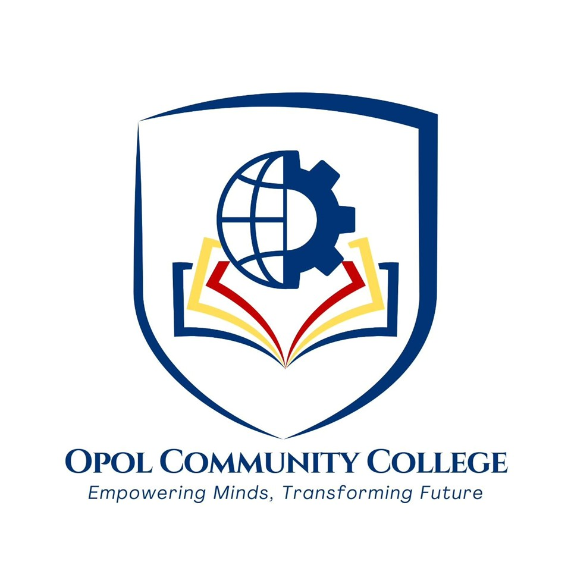
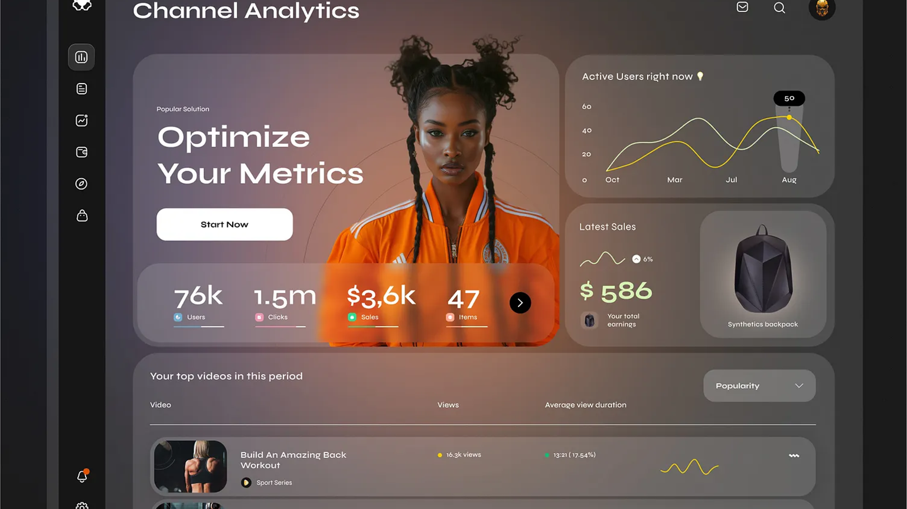
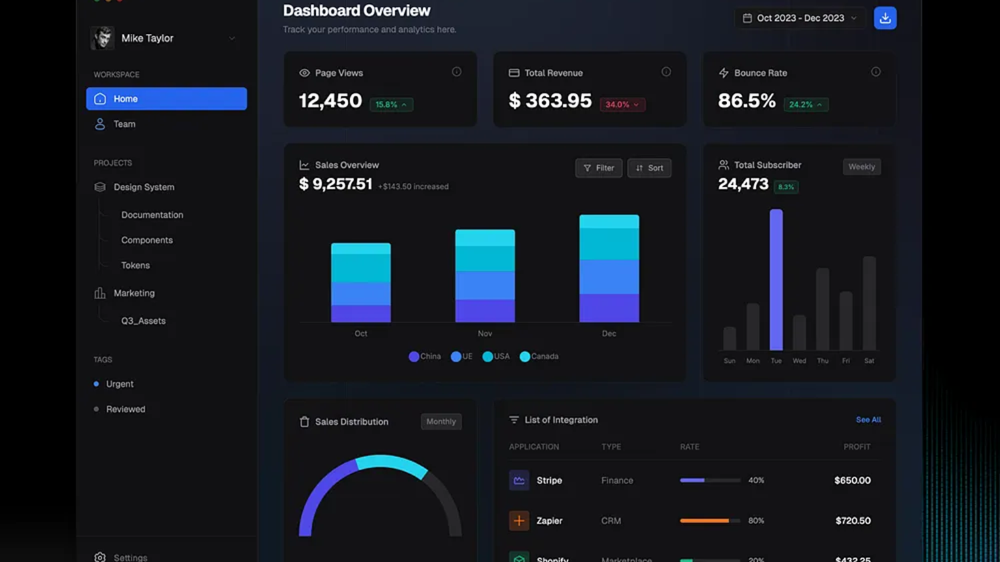
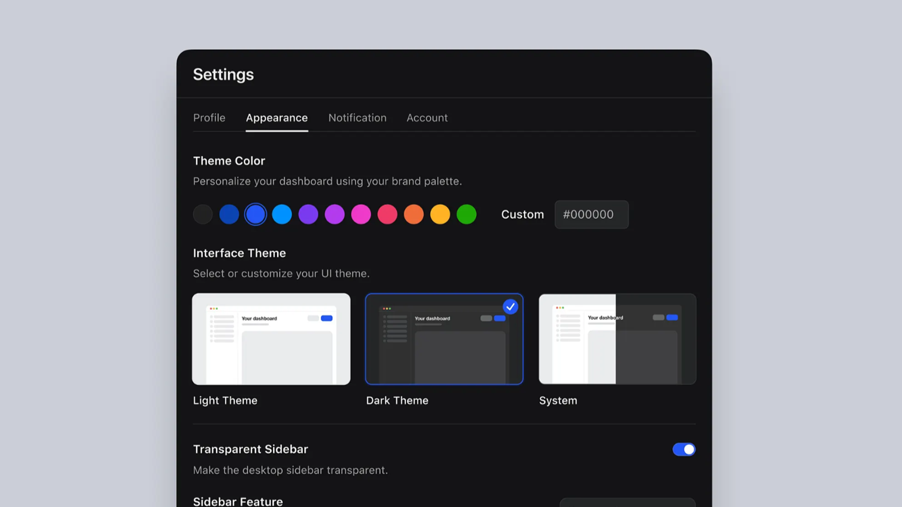
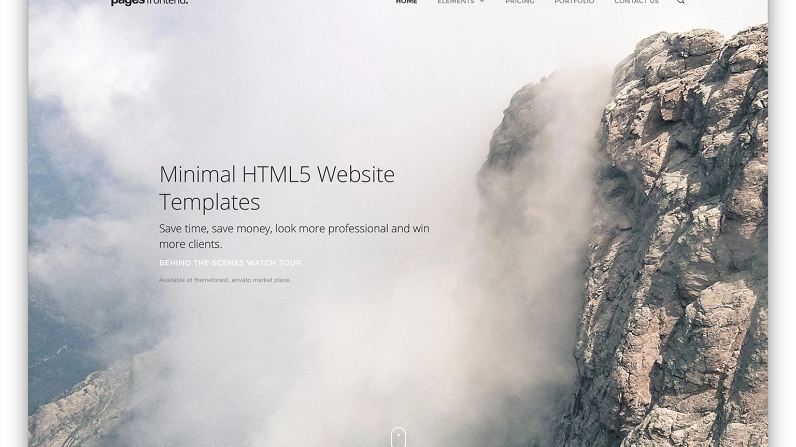
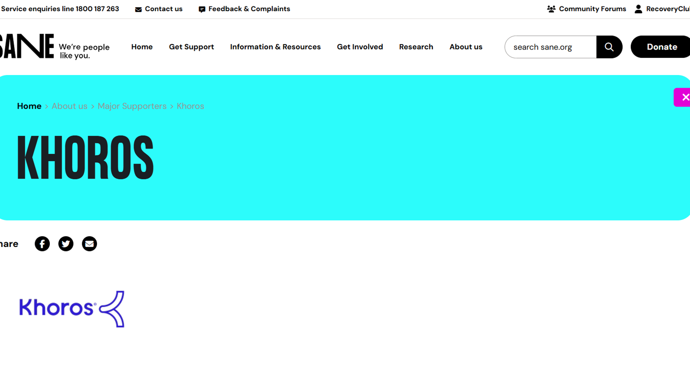
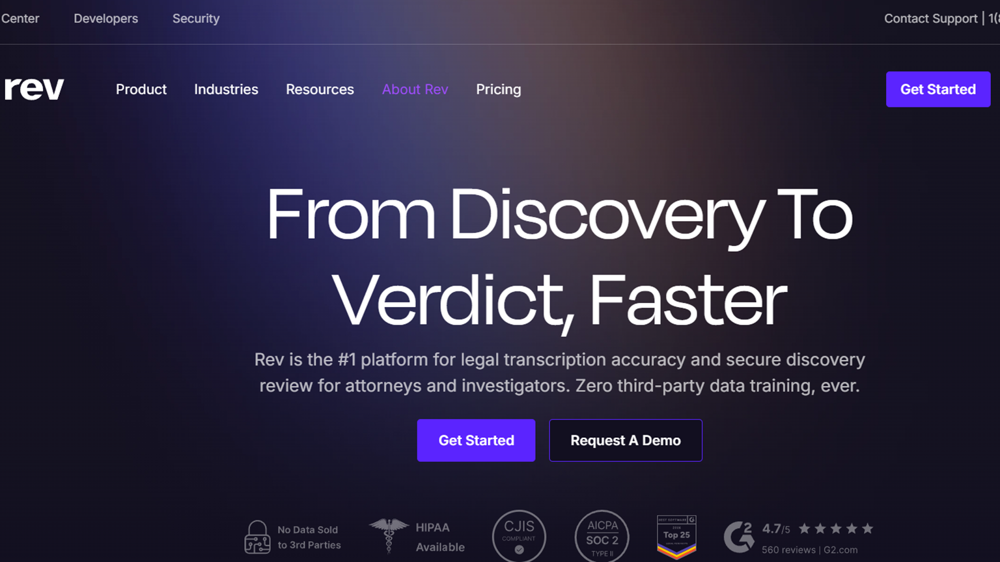

I build web interfaces that combine technical precision with thoughtful design, creating experiences that feel natural for users and stay maintainable over time.
With a background in music and performance, I focus on rhythm, flow, and interaction to make interfaces intuitive and responsive, not just functional.
I specialize in HTML, CSS, JavaScript, and Python-supported tools, developing portfolios, dashboards, and system-driven platforms. I prioritize accessibility, responsiveness, cross-browser consistency, and clean, reusable code
I work closely with designers and developers to deliver scalable, reliable frontend systems that are easy to use and maintain.
Igpit Elementary Schoolarrow_outward
Elementary Education (2006 - 2012)
Completed elementary education,establishing foundational skills in literacy, numeracy, and basic learning competencies.
Bulua National High Schoolarrow_outward
Secondary Education (2012 - 2016)
Completed secondary education, developing academic knowledge, critical thinking, and communication skills.

Opol Community Collegearrow_outward
Bachelor of Science in Information Technology (2006 - 2012)
Completed a degree in Information Technology, gaining knowledge in programming, system development, and database management.
Frontend Developmentarrow_outward
Strong experience in building responsive, accessible, and scalable web interfaces. Skilled in creating reusable components, maintaining consistent UI systems, and optimizing performance across modern web applications.
UI/UX Implementationarrow_outward
Experienced in translating design concepts into functional, polished interfaces. Focused on layout structure, visual consistency, usability, and smooth interaction across devices and browsers.
Component-Based Architecturearrow_outward
Experienced in translating design concepts into functional, polished interfaces. Focused on layout structure, visual consistency, usability, and smooth interaction across devices and browsers.
Responsive Designarrow_outward
Ability to create layouts that adapt seamlessly across different screen sizes and devices, ensuring a consistent user experience.
State Management & Application Logicarrow_outward
Experience handling dynamic data, user interactions, and application states in complex interfaces, especially in dashboard-style and data-driven systems.
Code Quality & Maintainabilityarrow_outward
Skilled in writing clean, structured, and maintainable code. Experienced in refactoring existing systems to improve performance, readability, and long-term scalability.
Collaboration & Teamworkarrow_outward
Worked closely with designers and developers to align on design systems and project requirements, ensuring cohesive and user-centered outcomes.
2023 - Present
Senior Frontend Engineer · Behancearrow_outward
Built and maintained shared frontend components across web apps, ensuring accessibility,
responsiveness, and consistency while improving UI structure.
Collaborated with designers and developers to match design intent and system requirements,
promoting accessible and consistent user experiences.
- HTML
- CSS
- JavaScript
- React
2018 - 2023
Frontend Engineer · Chimearrow_outward
Built and shipped frontend solutions for dashboard-style applications, internal tools,
and content-driven websites. Led interface development for several projects, focusing on
layout systems, component reuse, and long-term maintainability.
Provided technical guidance during implementation, reviewed frontend code,
and contributed to improving internal workflows and UI consistency across projects.
- HTML
- CSS (SCSS)
- JavaScript
- React
- Node.js
2016 - 2018
UI Engineer · Dribbblearrow_outward
Developed and styled interactive web interfaces for user-facing applications.
ocused on translating design mockups into functional layouts, refining UI details,
and ensuring smooth interaction across devices and browsers.
Collaborated with designers to refine visual details and
improve usabilitythrough iteration and feedback.
- HTML
- CSS (SCSS)
- JavaScript
- Responsive Dessign
2015 - 2016
Frontend Developer · Shopifyarrow_outward
Worked on small to mid-sized web projects includingportfolio sites, landing pages, and system interfaces. Built foundational frontend structures and assisted in maintaining existing web applications.
- HTML
- CSS
- JavaScript
{kind=link}

Build a Modular Dashboard Interfacearrow_outward
Frontend-focused project exploring how to design and structure reusable dashboard components for web applications. Covers layout systems, component composition, state handling, and accessibility considerations for data-heavy interfaces.
- UI structure
- Component reuse
- Responsive layout

User Activity Visualizerarrow_outward
Web application for visualizing user activity and interaction data in a clean, readable format. Displays summaries, trends, and detailed views with a focus on clarity and predictable behavior.
★ 640
- HTML
- JavaScript
- React
{kind=link}

Focus Themearrow_outward
Minimal dark UI theme designed for long coding sessions. Built with attention to contrast, readability, and visual balance. Adapted for multiple editors and environments.
download1,200+ installs
- CSS
- Design Tokens
- UI Styling
{kind=link}

Personal Portfolio System (v5)arrow_outward
A custom-built portfolio framework designed for flexibility and long-term maintenance. Supports multiple layouts, content sections, and project types while keeping structure simple and readable.
★ 3,900
- HTML
- CSS
- JavaScript

FormFlowarrow_outward
Frontend interface for managing complex multi-step forms in system-driven applications. Focused on validation, error handling, and clear user feedback throughout workflows.
- HTML
- CSS
- JavaScript
- Python

Legacy UI Cleanuparrow_outward
Refactoring project focused on improving an existing frontend codebase. Simplified layout logic, reduced styling duplication, and improved responsiveness and consistency across views.
★ 480
- HTML
- CSS
- JavaScript
- Python